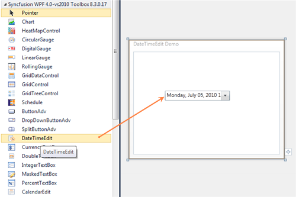

Steps to create DateTimeEdit control by using Visual Studio in XAML as follows:
1. Create a new application in Visual Studio.
2. In the Visual Studio Toolbox, click Syncfusion Silverlight Toolbox tab and select DateTimeEdit.
3. Drag and Drop the DateTimeEdit control to design view in orderto add DateTimeEdit control to your application.

Figure 420: Control added to Design View
4. In the properties window, customize the properties of the DateTimeEdit control.
|
XAML |
|
<syncfusion:DateTimeEdit Height="29" Margin="75,71,50,0" VerticalAlignment="Top"/>
|

Figure 421: DateTimeEdit control
See Also
Creating a DateTimeEdit control using C#
Creating a DateTimeEdit control by using Blend